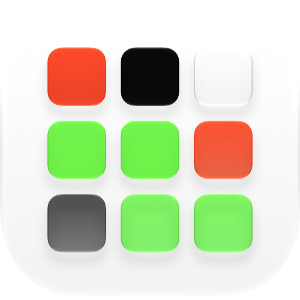

black&white
Clear a path. Beat the clock.
How it works
Each level is a grid of black and white squares. Make an unbroken line of white squares from the start on the left to the finish on the right. Every square you tap locks in place and flips the eight around it – so think ahead, because the clock is running, and it gets quicker every level.
Scoring
- A point for every square in your path
- Lose a point for each white square left over
- Lose a point for each square you've locked
- Leave no white squares at all for a big bonus, and catch the star for extra power-ups
Features
- Three power-ups: flip everything, unlock a square, or flip just one
- Easy, Regular and Hard, each with its own Game Center leaderboard
- Achievements to earn
- Personal bests synced with iCloud
- Seven colour schemes, including a colour-blind-friendly one, with matching app icons
- A quick interactive tutorial
- Retro sound effects
- For iPhone and iPad. No ads, no in-app purchases.